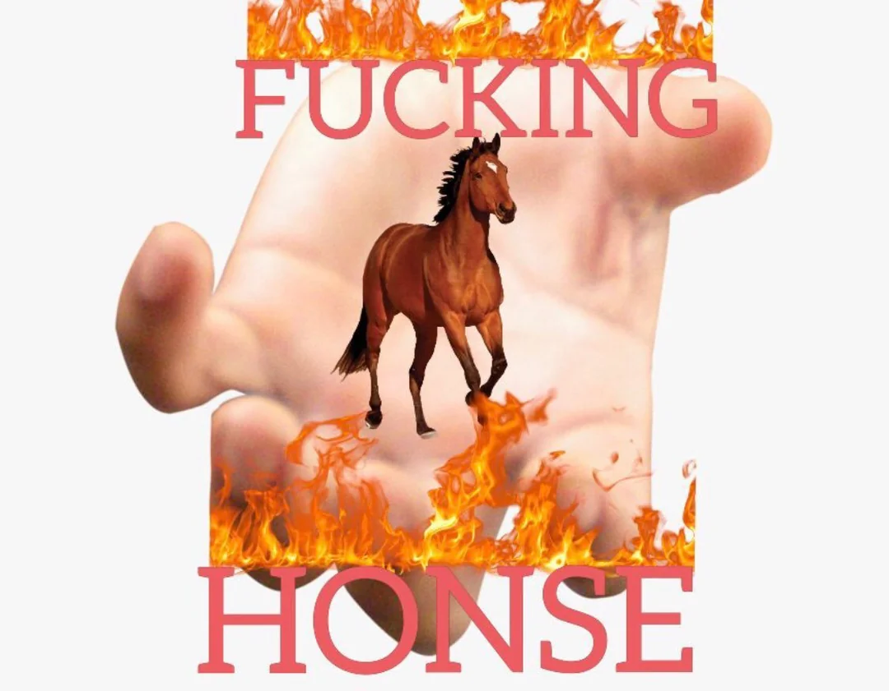

Brand Concept: Close Friends Bag Study
A short analysis of ethos, pathos, and logos in packaging and brand touchpoints, exploring how visual hierarchy guides attention without relying on heavy styling.
I’m a Strategic Communication (Creative Track) student at CU Boulder with a focus on visual storytelling and brand design. I also explore interactive media projects and bring a designer’s eye to code.

A short analysis of ethos, pathos, and logos in packaging and brand touchpoints, exploring how visual hierarchy guides attention without relying on heavy styling.
A simple browser game prototype built with friends.